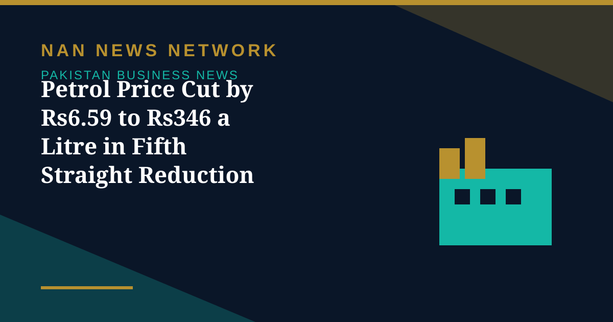

Petrol Price Cut by Rs6.59 to Rs346 a Litre in Fifth Straight Reduction

The government on Friday once again decreased the price of petrol by Rs6.59 per litre and that of high-speed diesel (HSD) by Rs4.25, in the fifth consecutive cut in fuel prices, Dawn reported on November 7.
The new rates
Following the revision, petrol will retail at Rs346 per litre, down from Rs352.59, while HSD will cost Rs378, down from Rs382.25. The prices are applicable from November 7 (Saturday) to November 10 (Tuesday) due to a public holiday on November 9, according to a notification by the Oil and Gas Regulatory Authority (OGRA). The government continues to levy Rs114 per litre in taxes and duties on petrol and Rs100 per litre on diesel. The ex-refinery price of petrol has decreased to Rs249.92 from Rs256.94 per litre, Business Recorder reported.
A week of daily cuts
Petrol has fallen from Rs377.91 per litre on October 31 to Rs346 per litre, a cumulative reduction of Rs31.91, or around 8.4 percent, PakWheels reported, while diesel has fallen by Rs24.96 over the same period. The cuts have been driven by falling international oil prices and by a new pricing arrangement under which refineries are absorbing part of the petroleum levy. The daily price fixation mechanism was implemented in July, replacing a weekly mechanism, so that changes in international oil prices are passed on to consumers immediately.
What to watch next
Petroleum Minister Ali Pervaiz Malik has said fuel prices are fixed on a daily basis due to fluctuations in international market prices. The arrangement under which refineries absorb part of the levy is temporary, which is why the daily cuts may not continue indefinitely even if world prices stay soft. For now, though, motorists are getting relief at the pump for a fifth straight revision — the longest run of cuts in recent memory.
Sources: Dawn, Business Recorder, The Nation, PakWheels, November 7, 2026
More on Pakistan Business News
- Trade Deficit Widens 16% to $14.6 Billion as Imports Hit $26 Billion in July-October
- PSX Snaps Four-Day Rally as KSE-100 Falls 1,493 Points to 173,887 on Profit-Taking
- Pakistan's External Debt Nearly Doubles to $135.1 Billion in a Decade, World Bank Reports
- PSX Closes at Record 175,380 as KSE-100 Gains 3,366 Points for a Second Day
- ABHI Microfinance Bank IPO Book-Building Opens Today, Bidding Runs November 5-6
- PSX Surges 3,995 Points to Close Above 172,000 on Geopolitical Optimism
- Pakistan Ranks 106th on 2026 Global Hunger Index as Report Questions Budget Priorities
- PSX Gains 1,454 Points to Close at 168,018 on Renewed Buying in Heavyweights
- Pakistan's First SPAC Deal Brings Solar Firm Ningbo Green Light Energy to the PSX
- PSX Recovers 155 Points to Close at 166,564 as Oil Prices Ease
- PSX in October: KSE-100 Fell 3,560 Points as War Fears and a Rate Hike Weighed
- Pakistan's Refineries Report 1,860% Profit Jump as War-Driven Margins Surge
- ABHI Microfinance Bank Plans Up to Rs3 Billion PSX IPO, Book-Building on November 5-6
- PSX Ends Four-Session Rally as Oil Surge Triggers Profit-Taking, Index Closes at 166,409
- Pakistan Cement Makers' Profits Rise 17% to Rs34.2 Billion in First Quarter of FY27
- Pakistan's Exports Rise 7.7% to $8.5 Billion but Trade Gap Widens in First Quarter
- SIFC Finalises 38 Projects Targeting $40 Billion in Investment, Senate Panel Told
- PSX Extends Recovery as KSE-100 Closes Above 167,000 on October 29
- Petrol, Diesel Prices Rise From October 29 as Government Revises Fuel Rates
- KSE-100 Gains 1,269 Points to Close Above 165,700
- Fauji Fertilizer's Nine-Month Profit Hits Rs71 Billion on Strong Urea Demand
- KSE-100 Climbs 1,428 Points to Close at 164,467 in Bullish Session
- Pakistan Signs $2.25 Billion Deal for Lithium Battery Gigafactory in Rawalpindi
- Gold Prices Rise by Rs1,400 per Tola in Pakistan on Monday
- Business Confidence Falls to 48 in October, State Bank Survey Shows
- Diesel Raised to Rs393.66 a Litre, Petrol Unchanged at Rs377.71
- FBR Activates Faceless Tax Audit System From October 15
- Pakistan-Iran Trade Disruption Puts $2.8 Billion Annual Trade at Stake